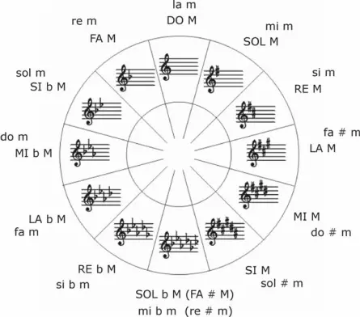

Las tonalidades
Las tonalidades musicales se definen como un sistema de organización de notas utilizado para hallar un equilibrio armónico en una canción a partir de la tónica. La tónica es la que determinará el rumbo melódico de una pieza musical y establecerá los ordenamientos de acordes a lo largo de la misma. Dentro de las tonalidades se emplean distintas escalas, las cuales están compuestas por notas conocidas como grados. Existen siete tipos diferentes de grados dentro de una escala. Este concepto tiene cierta relación con la modalidad musical. Entre las diferentes clases de tonalidades están las tonalidades tónicas (I), supertónicas (II), mediante (III), subdominante (IV), dominante (V), superdominante (VI) y subtónicas (VII). Cada una de estas clases de tonalidades se rigen por ciertos principios fundamentales, los cuales son:
• Encontrar los acordes perfectos de escalas mayores o menores en cada sonido a través del uso del doble principio armónico.
• Determinar el poder de atracción que ejerce la tónica de una obra que se constituye directamente en el centro armónico.
• Utilizar la tónica como centro principal al colocar de forma simétrica dos quintas, una superior y otra inferior, para que aparezcan las tonalidades dominantes y subdominantes. Esta técnica se conoce como superposición simétrica de principio armónico.
• Emplear la inercia fónica para encontrar la tendencia que poseen las notas modificadas para que puedan resolver de la misma forma en que han sido alteradas de forma ascendente o descendente.